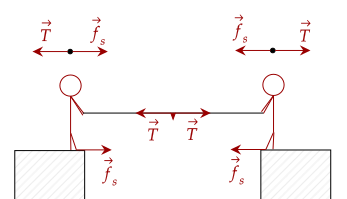
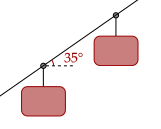
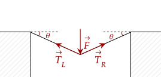
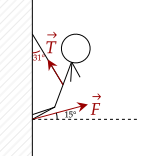

When you push on something, it exerts a normal force to counteract your pushing. When you pull on something, you also exert a force. Take for example a box on a string. The box is pulled down by its weight, which in turn pulls down the rope.

Like with the normal force, the weight and this pulling force are not pairs; the pulling force's partner is the pull of the box on the rope. Further, the rope pulls on the ceiling, and the ceiling pulls back on the rope.
This pulling force occurs on various objects that can stretch, like strings, ropes, or cords.
Tension "transmits" force through its medium. In a tug of war, both teams pull on the rope. Even if they pull at different strengths, the tension within the rope is equal.

For example, let's say the teams pull at 50N and 100N. The tension in the rope is somewhere inbetween, but let's say its 75N. The two teams are kept in place by friction.
By pushing on the floor, the normal force is increased, and thus the static friction is increased. Once this pulling force (tension) beats out this force, the team starts accelerating backwards, and will lose.
Question 1
(HRK Q5.1) You can pull a wagon with a rope, but you can’t push it with a rope. Is there such a thing as a “negative” tension?Answer
No, there is no such thing as a negative tension. Tension is strictly a pulling force.
Exercise 1
(HRK E5.4) An elevator and its load have a combined mass of 1600 kg. Find the tension in the supporting cable when the elevator, originally moving downward at 12.0 m/s, is brought to rest with constant acceleration in a distance of 42.0 m.Solution
The net force in the vertical direction is causing the deceleration. The two vertical forces are the weight and the tension of the rope pulling up. We set weight as negative.
We see here that we need the acceleration. This can be done via our kinematic equations, specifically our time-independent equation.
Plugging in our values, we get that the tension is the following.
Exercise 2
(HRK E5.7) The figure below shows a section of an alpine cable-car system. The maximum permitted mass of each car with occupants is 2800 kg. The cars, riding on a support cable, are pulled by a second cable attached to each pylon. What is the difference in tension between adjacent sections of pull cable if the cars are accelerated up to 35° incline at 0.81 m/s²?
Solution
There are three forces acting on the car pulling it up; the tension of the cable going up, the tension of the previous car pulling it down, and the weight of the car.
Like in an inclined plane, we have to resolve the weight to be parallel to the incline. Further, while we can't know the tensions of the car pulling up and down, we only care about the difference. Thus, we write this equation.
Substituting in the values, we get the value of the difference.
We now tackle problems where tension pulls at an angle, meaning we need to decompose it. We also need to note the vertical and horizontal forces, like we did before.

Problem 1
(LSM P5.62) Show that the tension in a flexible medium when a force exerted on its center and perpendicular to its length (such as in the figure above) is given by the following equation. All the forces are balanced.Solution
As we push on the rope, there is a tension at the point of contact pulling the rope up and to the left, and a tension at the right pulling the rope up and to the right.
There are two forces acting in the horizontal direction, being the horizontal components of the left and right tensions.
Now, we decompose the two tensions, noting that it is the adjacent side of the angle θ.
This shows that the magnitude of tension in the left and right side is equal. For simplicity, let's just use the symbol , given that both of them are equal anyway. For the vertical net force, we have the force pushing down, and the two vertical components of the left and right tension.
We now substitute in the value we have above, using the new symbol .
Exercise 3
(LSM P5.64) One end of a 30-m rope is tied to a tree; the other end is tied to a car stuck in the mud. The motorist pulls sideways on the midpoint of the rope, displacing it a distance of 2 m. If he exerts a force of 80 N under these conditions, determine the force exerted on the car.Solution
We will opt to use the equation above. We have the force, but we need the angle. Thankfully, we can use trigonometry. By pushing it 2m at the midpoint, we create a triangle with a leg of 2m and a hypotenuse of 15m.
Using arcsine, we get the angle.
Giving us our tension, which is equal to the force pulling on the car.
Exercise 4
(LSM P6.30) After a mishap, a 76.0-kg circus performer clings to a trapeze, which is being pulled to the side by another circus artist, as shown below. Calculate the tension in the two ropes if the person is momentarily motionless.
Solution
There are two forces acting in the horizontal direction, being the horizontal components of the left and right tensions.
Decomposing the two tensions, we have the following.
Unlike in the case where the angles are the same, the tension in the left and right aren't equal. You can either choose to solve with the tension in the right or the tension in the left, but we choose to start with the left tension.
For the vertical net force, we have the weight, and the two vertical components of the tensions. We also decompose the forces.
We now substitute in our value for the right tension.
After plugging in the values, we get the tension in the left side is about 736N. To get the right side, we just return to our equation.
Exercise 5
(LSM P6.61b) Consider the 52.0-kg mountain climber shown below. Assume that the force is exerted parallel to her legs. Also, assume negligible force exerted by her arms. What is the minimum coefficient of friction between her shoes and the cliff?
Solution
To answer this question, you need not solve for the magnitude of the force of tension or the feet pushing.
The normal force is the force pushing into the rock, or the horizontal component of the feet pushing. The force it is trying to oppose is the vertical component of the feet pushing. We set up the equation.
How do ropes and other media transfer this force? To see this, imagine zooming into the string. Each part is pulled by the previous and next part, transmitting the force.
This also shows one assumption that we've been making, and that is the rope has negligible mass. In other words, the entire string has uniform tension.
Question 2
A ball is tied to a string which is tied to the ceiling. The string has non-negligible mass. Is the tension uniform throughout the entire string? If not, which part would have the highest tension?
Answer
No, the tension is not uniform. The point with the highest tension would be the point at the ceiling, as it is pulled down by all of the other string plus the ball. The part with the least tension is the one connected to the ball, as all it needs to pull up is the ball, and none of the string.